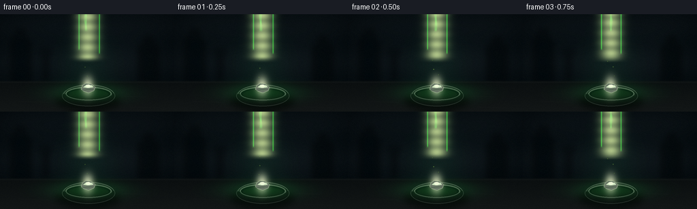
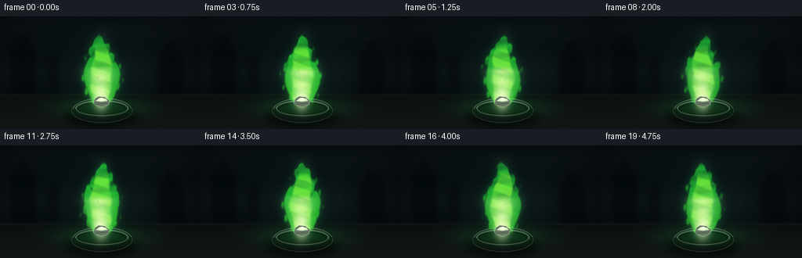
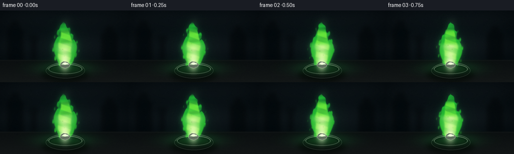
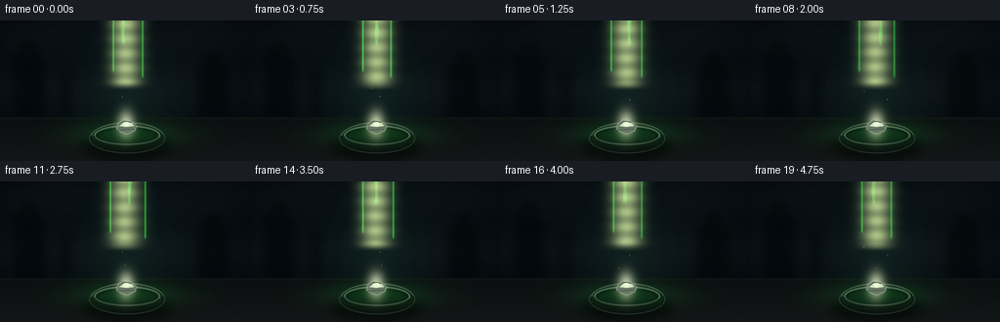
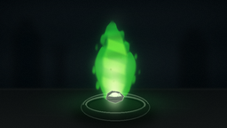

CODING AGENTS AS PIXEL WORLD MODELS
traex/GPT-5.6-Sol · material_0007
点击播放 · 原生 RGB 像素
逐轮保存的候选
回放视频、检查图与代码变化。
每份候选均可单独播放。实际图片检查记录在下方工具轨迹中。
候选 01播放与检查图
点击播放 · 原生 RGB 像素


展开代码变化
--- 上一保存版本
+++ 本次保存版本
@@ -0,0 +1,206 @@
+from pathlib import Path
+import math
+import numpy as np
+from PIL import Image, ImageDraw, ImageFilter
+import artifact_io
+
+# Procedural, deterministic macro shot of burning barium.
+W, H, N = 256, 144, 20
+S = 3
+w, h = W*S, H*S
+rng = np.random.default_rng(73021)
+
+def smoothstep(a, b, x):
+ q = np.clip((x-a)/(b-a), 0.0, 1.0)
+ return q*q*(3-2*q)
+
+def alpha_over(base, rgb, alpha):
+ a = np.clip(alpha, 0, 1)[..., None]
+ return base*(1-a) + np.asarray(rgb, np.float32)*a
+
+def additive(base, rgb, alpha):
+ return np.clip(base + np.asarray(rgb, np.float32)*np.clip(alpha,0,1)[...,None], 0, 255)
+
+# Coordinates are expressed in output-pixel units, despite supersampling.
+yy, xx = np.mgrid[0:h, 0:w].astype(np.float32)
+X, Y = xx/S, yy/S
+
+# Moody dark laboratory wall: radial falloff, subtle grime and blue-black corners.
+rad = np.sqrt(((X-130)/180)**2 + ((Y-69)/115)**2)
+light = np.clip(1-rad, 0, 1)
+base = np.zeros((h,w,3), np.float32)
+base[...,0] = 5 + 10*light
+base[...,1] = 10 + 14*light
+base[...,2] = 13 + 15*light
+# horizontal wall bands, restrained and soft
+base += (1.4*np.sin(Y*.11) + 0.8*np.sin(X*.035+Y*.025))[...,None]
+
+# Out-of-focus laboratory silhouettes in the background.
+bg = Image.fromarray(np.uint8(np.clip(base,0,255)), 'RGB')
+sil = Image.new('RGBA',(w,h),(0,0,0,0)); d=ImageDraw.Draw(sil,'RGBA')
+def box(coords, fill, radius=0):
+ c=tuple(int(v*S) for v in coords)
+ if radius: d.rounded_rectangle(c, radius=int(radius*S), fill=fill)
+ else: d.rectangle(c,fill=fill)
+# dim bottles and stands
+box((17,35,44,102),(1,7,10,170),4); box((24,23,36,39),(2,8,11,150),2)
+box((204,46,232,101),(2,7,9,165),3); box((212,34,224,49),(2,7,9,150),2)
+box((64,59,70,101),(2,6,8,145),1); box((59,52,75,60),(3,8,10,120),2)
+d.ellipse((int(188*S),int(17*S),int(197*S),int(26*S)),fill=(45,71,60,25))
+d.ellipse((int(45*S),int(28*S),int(52*S),int(35*S)),fill=(35,66,61,22))
+sil=sil.filter(ImageFilter.GaussianBlur(4.2*S))
+bg=Image.alpha_composite(bg.convert('RGBA'),sil).convert('RGB')
+base=np.asarray(bg).astype(np.float32)
+
+# Workbench horizon and matte stone surface.
+bench_mask = smoothstep(97,101,Y)
+bench_rgb=np.zeros_like(base)
+bench_rgb[...,0]=11 + 8*(Y-99)/45
+bench_rgb[...,1]=15 + 8*(Y-99)/45
+bench_rgb[...,2]=16 + 7*(Y-99)/45
+base=base*(1-bench_mask[...,None])+bench_rgb*bench_mask[...,None]
+# faint table scratches and back edge
+base = alpha_over(base,(40,45,42), np.exp(-((Y-100.2)/1.15)**2)*0.20)
+for sx, sy, ln in [(28,129,45),(179,121,35),(76,138,61),(191,137,42)]:
+ line=np.exp(-((Y-(sy+.028*(X-sx)))/.28)**2)*smoothstep(sx-3,sx+2,X)*smoothstep(sx+ln+3,sx+ln-2,X)
+ base=alpha_over(base,(38,40,38),line*.18)
+
+# Fixed subtle sensor texture, preserving cinematic darkness.
+texture = rng.normal(0, 0.65, (h,w,1)).astype(np.float32)
+base=np.clip(base+texture,0,255)
+
+# Static apparatus/dish rendered once, with dynamic illumination later.
+def draw_dish_scene(arr):
+ im=Image.fromarray(np.uint8(arr),'RGB').convert('RGBA')
+ sh=Image.new('RGBA',(w,h),(0,0,0,0)); sd=ImageDraw.Draw(sh,'RGBA')
+ sd.ellipse((82*S,113*S,177*S,142*S),fill=(0,0,0,170))
+ sh=sh.filter(ImageFilter.GaussianBlur(5*S)); im=Image.alpha_composite(im,sh)
+ q=Image.new('RGBA',(w,h),(0,0,0,0)); qd=ImageDraw.Draw(q,'RGBA')
+ # refractory combustion boat: low dark oval with thick rim
+ qd.ellipse((91*S,105*S,169*S,136*S),fill=(9,11,11,255),outline=(38,42,40,255),width=1*S)
+ qd.ellipse((96*S,107*S,164*S,128*S),fill=(4,7,7,255),outline=(75,79,72,230),width=2*S)
+ qd.ellipse((101*S,111*S,159*S,126*S),fill=(9,12,10,255))
+ # uneven rim highlights
+ qd.arc((93*S,104*S,168*S,135*S),187,349,fill=(103,108,98,150),width=1*S)
+ qd.arc((96*S,107*S,164*S,128*S),14,176,fill=(21,25,23,255),width=1*S)
+ im=Image.alpha_composite(im,q)
+ return np.asarray(im.convert('RGB')).astype(np.float32)
+base=draw_dish_scene(base)
+
+frames=[]
+for fi in range(N):
+ t=fi*2*math.pi/N
+ a=base.copy()
+
+ # Apple-green spill light over the bench and ceramic rim.
+ spill=np.exp(-(((X-130)/54)**2+((Y-116)/13)**2))*0.50
+ flick=0.96+0.035*math.sin(t*2+0.7)+0.018*math.sin(t*5)
+ a=additive(a,(14,82,31),spill*flick)
+ halo=np.exp(-(((X-129)/35)**2+((Y-79)/48)**2))*0.17
+ a=additive(a,(7,58,20),halo*flick)
+
+ # Smoke just above the flame, barely visible against the black wall.
+ smoke = np.zeros((h,w),np.float32)
+ for j in range(3):
+ cy=20-j*8
+ cx=130+6*math.sin(t*.55+j*1.8)
+ smoke += np.exp(-(((X-cx)/(9+j*2))**2+((Y-cy)/(14+j*3))**2))
+ smoke *= smoothstep(3,30,Y)*(1-smoothstep(38,48,Y))*0.055
+ a=alpha_over(a,(86,108,93),smoke)
+
+ # Flame centerline and width. Motion stays coherent and restrained: a steady burn.
+ top=24.0+1.7*math.sin(t*1.0)+0.7*math.sin(t*3.0+1.1)
+ bottom=112.0
+ v=np.clip((bottom-Y)/(bottom-top),0,1) # 0 at metal, 1 at tip
+ inside_y=smoothstep(bottom+1,bottom-2,Y)*(1-smoothstep(top-3,top+2,Y))
+ cx=129 + (2.1*np.sin(5.0*v+t*.9)+1.2*np.sin(10.5*v-t*1.3))*v + 2.0*v*v*math.sin(t*.65)
+ width=10.5*(1-v)+23.5*np.power(np.maximum(np.sin(np.pi*v),0),.74)*(1-.24*v)+2.4
+ turbulence=.72+.18*np.sin(X*.35+Y*.27+t*3.1)+.10*np.sin(X*.73-Y*.16-t*4.2)
+ edge=1-np.abs(X-cx)/(width*np.clip(turbulence,.55,1.05))
+ outer=smoothstep(-.09,.22,edge)*inside_y
+ # transparency variation yields rolling, gaseous structure without frame-to-frame noise
+ outer*=np.clip(.78+.14*np.sin(Y*.33+X*.12+t*2.4)+.07*np.sin(Y*.71-t*3.2),.55,1)
+
+ # Separate side tongues branching from the same luminous base.
+ def tongue(xbase, ytop, lean, phase, maxw):
+ tv=np.clip((108-Y)/(108-ytop),0,1)
+ tc=xbase+lean*tv+2.2*np.sin(tv*6.2+t*1.35+phase)*tv
+ tw=3.0*(1-tv)+maxw*np.power(np.maximum(np.sin(np.pi*tv),0),.76)+1.0
+ te=1-np.abs(X-tc)/tw
+ ty=smoothstep(110,106,Y)*(1-smoothstep(ytop-2,ytop+2,Y))
+ return smoothstep(-.08,.25,te)*ty
+ left=tongue(122,52,-8.0,1.2,8.2)
+ right=tongue(138,58,8.5,3.5,7.6)
+ outer=np.clip(np.maximum(outer,np.maximum(left*.91,right*.88)),0,1)
+
+ # Broad diffused aura behind the translucent body.
+ mask_img=Image.fromarray(np.uint8(outer*255),'L')
+ glow=np.asarray(mask_img.filter(ImageFilter.GaussianBlur(5.3*S))).astype(np.float32)/255
+ a=additive(a,(10,120,39),glow*.56*flick)
+ tight=np.asarray(mask_img.filter(ImageFilter.GaussianBlur(1.6*S))).astype(np.float32)/255
+ a=additive(a,(16,100,25),tight*.25)
+
+ # Outer green envelope. Color varies from emerald edge to yellow-green lower body.
+ greenmix=np.clip(.22+.65*(1-v),0,1)
+ outer_rgb=np.empty_like(a)
+ outer_rgb[...,0]=25+34*greenmix
+ outer_rgb[...,1]=205+38*greenmix
+ outer_rgb[...,2]=61-22*greenmix
+ oa=(outer**1.15)*(.66+.08*np.sin(t*2.0))
+ a=a*(1-oa[...,None])+outer_rgb*oa[...,None]
+
+ # Folded ribbons inside the flame create depth and identify a real flame, not a flat glow.
+ inner_width=width*(.53+.04*np.sin(Y*.22-t*2.1))
+ inner_edge=1-np.abs(X-(cx-1.3*np.sin(v*7+t)))/inner_width
+ inner=smoothstep(-.02,.30,inner_edge)*inside_y
+ inner*=smoothstep(top+8,top+22,Y) # inner body does not quite reach tip
+ ribbon=.55+.45*smoothstep(-.5,.45,np.sin(Y*.28-X*.10+t*2.3))
+ inner*=ribbon
+ irgb=np.zeros_like(a); irgb[...,0]=115+45*(1-v); irgb[...,1]=247; irgb[...,2]=50+45*(1-v)
+ ia=inner*.72
+ a=a*(1-ia[...,None])+irgb*ia[...,None]
+
+ # Pale, almost white-hot base core around the burning metal.
+ core_center=128.5+1.1*math.sin(t*1.4)
+ corew=4.0+10.5*np.power(np.clip((112-Y)/43,0,1),.62)
+ # core tapers upward from a broad white base and ends around y=66
+ core_shape=np.exp(-((X-core_center)/(corew+1e-3))**2)*smoothstep(113,108,Y)*(1-smoothstep(62,72,Y))
+ core_shape*=.82+.12*np.sin(Y*.42+t*2.7)
+ a=alpha_over(a,(232,255,174),core_shape*.78)
+ hot=np.exp(-(((X-129)/8.5)**2+((Y-106)/13.5)**2))
+ a=alpha_over(a,(249,255,211),hot*.75)
+
+ # Irregular silvery barium fragment, visibly sitting in the combustion boat.
+ obj=Image.new('RGBA',(w,h),(0,0,0,0)); od=ImageDraw.Draw(obj,'RGBA')
+ nug=[(119,111),(121,105),(126,102),(134,103),(140,108),(138,113),(130,116),(123,114)]
+ nug=[(int(x*S),int(y*S)) for x,y in nug]
+ od.polygon(nug,fill=(105,119,102,255),outline=(195,221,178,255))
+ od.polygon([(122*S,108*S),(127*S,104*S),(135*S,105*S),(137*S,108*S),(129*S,109*S)],fill=(215,238,199,225))
+ od.ellipse((126*S,104*S,133*S,108*S),fill=(246,255,225,220))
+ od.line((121*S,112*S,137*S,111*S),fill=(66,87,69,255),width=S)
+ obj_arr=np.asarray(obj).astype(np.float32)
+ oa2=obj_arr[...,3]/255
+ a=a*(1-oa2[...,None])+obj_arr[...,:3]*oa2[...,None]
+
+ # Tiny, infrequent incandescent flecks caught in the upward gas flow.
+ sparks=Image.new('RGBA',(w,h),(0,0,0,0)); sp=ImageDraw.Draw(sparks,'RGBA')
+ for j in range(5):
+ phase=(fi*.19+j*.217)%1.0
+ sy=105-phase*62
+ sx=129 + (j-2)*3.0 + math.sin(t*1.8+j*2.4)*4 + phase*(j-2)*2
+ vis=(math.sin(math.pi*phase)**2) * (0.55 if j else .8)
+ r=(.35+.45*(1-phase))*S
+ sp.ellipse((sx*S-r,sy*S-r,sx*S+r,sy*S+r),fill=(183,255,100,int(210*vis)))
+ sparks=sparks.filter(ImageFilter.GaussianBlur(.32*S))
+ a=np.asarray(Image.alpha_composite(Image.fromarray(np.uint8(np.clip(a,0,255)),'RGB').convert('RGBA'),sparks).convert('RGB')).astype(np.float32)
+
+ # Downsample with Lanczos; a faint final grain prevents sterile vector appearance.
+ out=Image.fromarray(np.uint8(np.clip(a,0,255)),'RGB').resize((W,H),Image.Resampling.LANCZOS)
+ frame=np.asarray(out).astype(np.int16)
+ fine=np.random.default_rng(9000+fi).normal(0,.35,(H,W,1))
+ frame=np.uint8(np.clip(frame+fine,0,255))
+ frames.append(frame)
+
+frames=np.stack(frames).astype(np.uint8)
+assert frames.shape==(20,144,256,3)
+artifact_io.save(frames, Path(__file__).resolve().parent)
候选 02播放与检查图
点击播放 · 原生 RGB 像素


展开代码变化
--- 上一保存版本
+++ 本次保存版本
@@ -112,7 +112,7 @@
top=24.0+1.7*math.sin(t*1.0)+0.7*math.sin(t*3.0+1.1)
bottom=112.0
v=np.clip((bottom-Y)/(bottom-top),0,1) # 0 at metal, 1 at tip
- inside_y=smoothstep(bottom+1,bottom-2,Y)*(1-smoothstep(top-3,top+2,Y))
+ inside_y=smoothstep(top-3,top+2,Y)*(1-smoothstep(bottom-2,bottom+1,Y))
cx=129 + (2.1*np.sin(5.0*v+t*.9)+1.2*np.sin(10.5*v-t*1.3))*v + 2.0*v*v*math.sin(t*.65)
width=10.5*(1-v)+23.5*np.power(np.maximum(np.sin(np.pi*v),0),.74)*(1-.24*v)+2.4
turbulence=.72+.18*np.sin(X*.35+Y*.27+t*3.1)+.10*np.sin(X*.73-Y*.16-t*4.2)
@@ -127,7 +127,7 @@
tc=xbase+lean*tv+2.2*np.sin(tv*6.2+t*1.35+phase)*tv
tw=3.0*(1-tv)+maxw*np.power(np.maximum(np.sin(np.pi*tv),0),.76)+1.0
te=1-np.abs(X-tc)/tw
- ty=smoothstep(110,106,Y)*(1-smoothstep(ytop-2,ytop+2,Y))
+ ty=smoothstep(ytop-2,ytop+2,Y)*(1-smoothstep(106,110,Y))
return smoothstep(-.08,.25,te)*ty
left=tongue(122,52,-8.0,1.2,8.2)
right=tongue(138,58,8.5,3.5,7.6)
@@ -164,7 +164,7 @@
core_center=128.5+1.1*math.sin(t*1.4)
corew=4.0+10.5*np.power(np.clip((112-Y)/43,0,1),.62)
# core tapers upward from a broad white base and ends around y=66
- core_shape=np.exp(-((X-core_center)/(corew+1e-3))**2)*smoothstep(113,108,Y)*(1-smoothstep(62,72,Y))
+ core_shape=np.exp(-((X-core_center)/(corew+1e-3))**2)*smoothstep(62,72,Y)*(1-smoothstep(108,113,Y))
core_shape*=.82+.12*np.sin(Y*.42+t*2.7)
a=alpha_over(a,(232,255,174),core_shape*.78)
hot=np.exp(-(((X-129)/8.5)**2+((Y-106)/13.5)**2))
可观测工具轨迹
实际执行的命令与返回图片。
命令 1exit 0
/bin/bash -lc "cat prompt.txt && printf '\\n---RULES---\\n' && cat GENERATION_RULES.md && printf '\\n---SPEC---\\n' && cat task_spec.json"
命令 2exit 1
/bin/bash -lc "find . -maxdepth 2 -type f -printf '%p\\n' | sort && printf '\\nTOOLS\\n' && command -v ffmpeg && command -v convert && command -v python3"
命令 3exit 0
/bin/bash -lc "cat artifact_io.py; python3 - <<'PY'
import PIL,numpy
print('PIL',PIL.__version__,'numpy',numpy.__version__)
PY"命令 4exit 0
/bin/bash -lc "cat > generate.py <<'PY'
from pathlib import Path
import math
import numpy as np
from PIL import Image, ImageDraw, ImageFilter
import artifact_io
# Procedural, deterministic macro shot of burning barium.
W, H, N = 256, 144, 20
S = 3
w, h = W*S, H*S
rng = np.random.default_rng(73021)
def smoothstep(a, b, x):
q = np.clip((x-a)/(b-a), 0.0, 1.0)
return q*q*(3-2*q)
def alpha_over(base, rgb, alpha):
a = np.clip(alpha, 0, 1)[..., None]
return base*(1-a) + np.asarray(rgb, np.float32)*a
def additive(base, rgb, alpha):
return np.clip(base + np.asarray(rgb, np.float32)*np.clip(alpha,0,1)[...,None], 0, 255)
# Coordinates are expressed in output-pixel units, despite supersampling.
yy, xx = np.mgrid[0:h, 0:w].astype(np.float32)
X, Y = xx/S, yy/S
# Moody dark laboratory wall: radial falloff, subtle grime and blue-black corners.
rad = np.sqrt(((X-130)/180)**2 + ((Y-69)/115)**2)
light = np.clip(1-rad, 0, 1)
base = np.zeros((h,w,3), np.float32)
base[...,0] = 5 + 10*light
base[...,1] = 10 + 14*light
base[...,2] = 13 + 15*light
# horizontal wall bands, restrained and soft
base += (1.4*np.sin(Y*.11) + 0.8*np.sin(X*.035+Y*.025))[...,None]
# Out-of-focus laboratory silhouettes in the background.
bg = Image.fromarray(np.uint8(np.clip(base,0,255)), 'RGB')
sil = Image.new('RGBA',(w,h),(0,0,0,0)); d=ImageDraw.Draw(sil,'RGBA')
def box(coords, fill, radius=0):
c=tuple(int(v*S) for v in coords)
if radius: d.rounded_rectangle(c, radius=int(radius*S), fill=fill)
else: d.rectangle(c,fill=fill)
# dim bottles and stands
box((17,35,44,102),(1,7,10,170),4); box((24,23,36,39),(2,8,11,150),2)
box((204,46,232,101),(2,7,9,165),3); box((212,34,224,49),(2,7,9,150),2)
box((64,59,70,101),(2,6,8,145),1); box((59,52,75,60),(3,8,10,120),2)
d.ellipse((int(188*S),int(17*S),int(197*S),int(26*S)),fill=(45,71,60,25))
d.ellipse((int(45*S),int(28*S),int(52*S),int(35*S)),fill=(35,66,61,22))
sil=sil.filter(ImageFilter.GaussianBlur(4.2*S))
bg=Image.alpha_composite(bg.convert('RGBA'),sil).convert('RGB')
base=np.asarray(bg).astype(np.float32)
# Workbench horizon and matte stone surface.
bench_mask = smoothstep(97,101,Y)
bench_rgb=np.zeros_like(base)
bench_rgb[...,0]=11 + 8*(Y-99)/45
bench_rgb[...,1]=15 + 8*(Y-99)/45
bench_rgb[...,2]=16 + 7*(Y-99)/45
base=base*(1-bench_mask[...,None])+bench_rgb*bench_mask[...,None]
# faint table scratches and back edge
base = alpha_over(base,(40,45,42), np.exp(-((Y-100.2)/1.15)**2)*0.20)
for sx, sy, ln in [(28,129,45),(179,121,35),(76,138,61),(191,137,42)]:
line=np.exp(-((Y-(sy+.028*(X-sx)))/.28)**2)*smoothstep(sx-3,sx+2,X)*smoothstep(sx+ln+3,sx+ln-2,X)
base=alpha_over(base,(38,40,38),line*.18)
# Fixed subtle sensor texture, preserving cinematic darkness.
texture = rng.normal(0, 0.65, (h,w,1)).astype(np.float32)
base=np.clip(base+texture,0,255)
# Static apparatus/dish rendered once, with dynamic illumination later.
def draw_dish_scene(arr):
im=Image.fromarray(np.uint8(arr),'RGB').convert('RGBA')
sh=Image.new('RGBA',(w,h),(0,0,0,0)); sd=ImageDraw.Draw(sh,'RGBA')
sd.ellipse((82*S,113*S,177*S,142*S),fill=(0,0,0,170))
sh=sh.filter(ImageFilter.GaussianBlur(5*S)); im=Image.alpha_composite(im,sh)
q=Image.new('RGBA',(w,h),(0,0,0,0)); qd=ImageDraw.Draw(q,'RGBA')
# refractory combustion boat: low dark oval with thick rim
qd.ellipse((91*S,105*S,169*S,136*S),fill=(9,11,11,255),outline=(38,42,40,255),width=1*S)
qd.ellipse((96*S,107*S,164*S,128*S),fill=(4,7,7,255),outline=(75,79,72,230),width=2*S)
qd.ellipse((101*S,111*S,159*S,126*S),fill=(9,12,10,255))
# uneven rim highlights
qd.arc((93*S,104*S,168*S,135*S),187,349,fill=(103,108,98,150),width=1*S)
qd.arc((96*S,107*S,164*S,128*S),14,176,fill=(21,25,23,255),width=1*S)
im=Image.alpha_composite(im,q)
return np.asarray(im.convert('RGB')).astype(np.float32)
base=draw_dish_scene(base)
frames=[]
for fi in range(N):
t=fi*2*math.pi/N
a=base.copy()
# Apple-green spill light over the bench and ceramic rim.
spill=np.exp(-(((X-130)/54)**2+((Y-116)/13)**2))*0.50
flick=0.96+0.035*math.sin(t*2+0.7)+0.018*math.sin(t*5)
a=additive(a,(14,82,31),spill*flick)
halo=np.exp(-(((X-129)/35)**2+((Y-79)/48)**2))*0.17
a=additive(a,(7,58,20),halo*flick)
# Smoke just above the flame, barely visible against the black wall.
smoke = np.zeros((h,w),np.float32)
for j in range(3):
cy=20-j*8
cx=130+6*math.sin(t*.55+j*1.8)
smoke += np.exp(-(((X-cx)/(9+j*2))**2+((Y-cy)/(14+j*3))**2))
smoke *= smoothstep(3,30,Y)*(1-smoothstep(38,48,Y))*0.055
a=alpha_over(a,(86,108,93),smoke)
# Flame centerline and width. Motion stays coherent and restrained: a steady burn.
top=24.0+1.7*math.sin(t*1.0)+0.7*math.sin(t*3.0+1.1)
bottom=112.0
v=np.clip((bottom-Y)/(bottom-top),0,1) # 0 at metal, 1 at tip
inside_y=smoothstep(bottom+1,bottom-2,Y)*(1-smoothstep(top-3,top+2,Y))
cx=129 + (2.1*np.sin(5.0*v+t*.9)+1.2*np.sin(10.5*v-t*1.3))*v + 2.0*v*v*math.sin(t*.65)
width=10.5*(1-v)+23.5*np.power(np.maximum(np.sin(np.pi*v),0),.74)*(1-.24*v)+2.4
turbulence=.72+.18*np.sin(X*.35+Y*.27+t*3.1)+.10*np.sin(X*.73-Y*.16-t*4.2)
edge=1-np.abs(X-cx)/(width*np.clip(turbulence,.55,1.05))
outer=smoothstep(-.09,.22,edge)*inside_y
# transparency variation yields rolling, gaseous structure without frame-to-frame noise
outer*=np.clip(.78+.14*np.sin(Y*.33+X*.12+t*2.4)+.07*np.sin(Y*.71-t*3.2),.55,1)
# Separate side tongues branching from the same luminous base.
def tongue(xbase, ytop, lean, phase, maxw):
tv=np.clip((108-Y)/(108-ytop),0,1)
tc=xbase+lean*tv+2.2*np.sin(tv*6.2+t*1.35+phase)*tv
tw=3.0*(1-tv)+maxw*np.power(np.maximum(np.sin(np.pi*tv),0),.76)+1.0
te=1-np.abs(X-tc)/tw
ty=smoothstep(110,106,Y)*(1-smoothstep(ytop-2,ytop+2,Y))
return smoothstep(-.08,.25,te)*ty
left=tongue(122,52,-8.0,1.2,8.2)
right=tongue(138,58,8.5,3.5,7.6)
outer=np.clip(np.maximum(outer,np.maximum(left*.91,right*.88)),0,1)
# Broad diffused aura behind the translucent body.
mask_img=Image.fromarray(np.uint8(outer*255),'L')
glow=np.asarray(mask_img.filter(ImageFilter.GaussianBlur(5.3*S))).astype(np.float32)/255
a=additive(a,(10,120,39),glow*.56*flick)
tight=np.asarray(mask_img.filter(ImageFilter.GaussianBlur(1.6*S))).astype(np.float32)/255
a=additive(a,(16,100,25),tight*.25)
# Outer green envelope. Color varies from emerald edge to yellow-green lower body.
greenmix=np.clip(.22+.65*(1-v),0,1)
outer_rgb=np.empty_like(a)
outer_rgb[...,0]=25+34*greenmix
outer_rgb[...,1]=205+38*greenmix
outer_rgb[...,2]=61-22*greenmix
oa=(outer**1.15)*(.66+.08*np.sin(t*2.0))
a=a*(1-oa[...,None])+outer_rgb*oa[...,None]
# Folded ribbons inside the flame create depth and identify a real flame, not a flat glow.
inner_width=width*(.53+.04*np.sin(Y*.22-t*2.1))
inner_edge=1-np.abs(X-(cx-1.3*np.sin(v*7+t)))/inner_width
inner=smoothstep(-.02,.30,inner_edge)*inside_y
inner*=smoothstep(top+8,top+22,Y) # inner body does not quite reach tip
ribbon=.55+.45*smoothstep(-.5,.45,np.sin(Y*.28-X*.10+t*2.3))
inner*=ribbon
irgb=np.zeros_like(a); irgb[...,0]=115+45*(1-v); irgb[...,1]=247; irgb[...,2]=50+45*(1-v)
ia=inner*.72
a=a*(1-ia[...,None])+irgb*ia[...,None]
# Pale, almost white-hot base core around the burning metal.
core_center=128.5+1.1*math.sin(t*1.4)
corew=4.0+10.5*np.power(np.clip((112-Y)/43,0,1),.62)
# core tapers upward from a broad white base and ends around y=66
core_shape=np.exp(-((X-core_center)/(corew+1e-3))**2)*smoothstep(113,108,Y)*(1-smoothstep(62,72,Y))
core_shape*=.82+.12*np.sin(Y*.42+t*2.7)
a=alpha_over(a,(232,255,174),core_shape*.78)
hot=np.exp(-(((X-129)/8.5)**2+((Y-106)/13.5)**2))
a=alpha_over(a,(249,255,211),hot*.75)
# Irregular silvery barium fragment, visibly sitting in the combustion boat.
obj=Image.new('RGBA',(w,h),(0,0,0,0)); od=ImageDraw.Draw(obj,'RGBA')
nug=[(119,111),(121,105),(126,102),(134,103),(140,108),(138,113),(130,116),(123,114)]
nug=[(int(x*S),int(y*S)) for x,y in nug]
od.polygon(nug,fill=(105,119,102,255),outline=(195,221,178,255))
od.polygon([(122*S,108*S),(127*S,104*S),(135*S,105*S),(137*S,108*S),(129*S,109*S)],fill=(215,238,199,225))
od.ellipse((126*S,104*S,133*S,108*S),fill=(246,255,225,220))
od.line((121*S,112*S,137*S,111*S),fill=(66,87,69,255),width=S)
obj_arr=np.asarray(obj).astype(np.float32)
oa2=obj_arr[...,3]/255
a=a*(1-oa2[...,None])+obj_arr[...,:3]*oa2[...,None]
# Tiny, infrequent incandescent flecks caught in the upward gas flow.
sparks=Image.new('RGBA',(w,h),(0,0,0,0)); sp=ImageDraw.Draw(sparks,'RGBA')
for j in range(5):
phase=(fi*.19+j*.217)%1.0
sy=105-phase*62
sx=129 + (j-2)*3.0 + math.sin(t*1.8+j*2.4)*4 + phase*(j-2)*2
vis=(math.sin(math.pi*phase)**2) * (0.55 if j else .8)
r=(.35+.45*(1-phase))*S
sp.ellipse((sx*S-r,sy*S-r,sx*S+r,sy*S+r),fill=(183,255,100,int(210*vis)))
sparks=sparks.filter(ImageFilter.GaussianBlur(.32*S))
a=np.asarray(Image.alpha_composite(Image.fromarray(np.uint8(np.clip(a,0,255)),'RGB').convert('RGBA'),sparks).convert('RGB')).astype(np.float32)
# Downsample with Lanczos; a faint final grain prevents sterile vector appearance.
out=Image.fromarray(np.uint8(np.clip(a,0,255)),'RGB').resize((W,H),Image.Resampling.LANCZOS)
frame=np.asarray(out).astype(np.int16)
fine=np.random.default_rng(9000+fi).normal(0,.35,(H,W,1))
frame=np.uint8(np.clip(frame+fine,0,255))
frames.append(frame)
frames=np.stack(frames).astype(np.uint8)
assert frames.shape==(20,144,256,3)
artifact_io.save(frames, Path(__file__).resolve().parent)
PY
python3 generate.py
ls -lh pixels.npz inspection.png index.html frames/00.png"命令 5exit 0
/bin/bash -lc "python3 - <<'PY' p='generate.py' s=open(p).read() s=s.replace(\"inside_y=smoothstep(bottom+1,bottom-2,Y)*(1-smoothstep(top-3,top+2,Y))\", \"inside_y=smoothstep(top-3,top+2,Y)*(1-smoothstep(bottom-2,bottom+1,Y))\") s=s.replace(\"ty=smoothstep(110,106,Y)*(1-smoothstep(ytop-2,ytop+2,Y))\", \"ty=smoothstep(ytop-2,ytop+2,Y)*(1-smoothstep(106,110,Y))\") s=s.replace(\"core_shape=np.exp(-((X-core_center)/(corew+1e-3))**2)*smoothstep(113,108,Y)*(1-smoothstep(62,72,Y))\", \"core_shape=np.exp(-((X-core_center)/(corew+1e-3))**2)*smoothstep(62,72,Y)*(1-smoothstep(108,113,Y))\") open(p,'w').write(s) PY python3 generate.py"
命令 6exit 0
/bin/bash -lc "python3 - <<'PY'
import numpy as np, json, os
from PIL import Image
f=[]
for i in range(20): f.append(np.array(Image.open(f'frames/{i:02d}.png')))
a=np.stack(f)
print(a.shape,a.dtype,a.min(),a.max(), 'mean',a.mean())
print('frame diff mean/min/max', np.abs(a[1:].astype(int)-a[:-1].astype(int)).mean((1,2,3)).round(2))
z=np.load('pixels.npz')['pixels']; print('packed',z.shape,z.dtype)
print('artifacts',[(x,os.path.getsize(x)) for x in ['pixels.npz','index.html','inspection.png','transition_check.png','generate.py']])
PY"视觉工具实际返回图片 1

视觉工具实际返回图片 2

视觉工具实际返回图片 3

保存候选 2 份；完成命令 6 次；可验证图片返回 3 张。原始 API 响应与完整日志保留在本地。